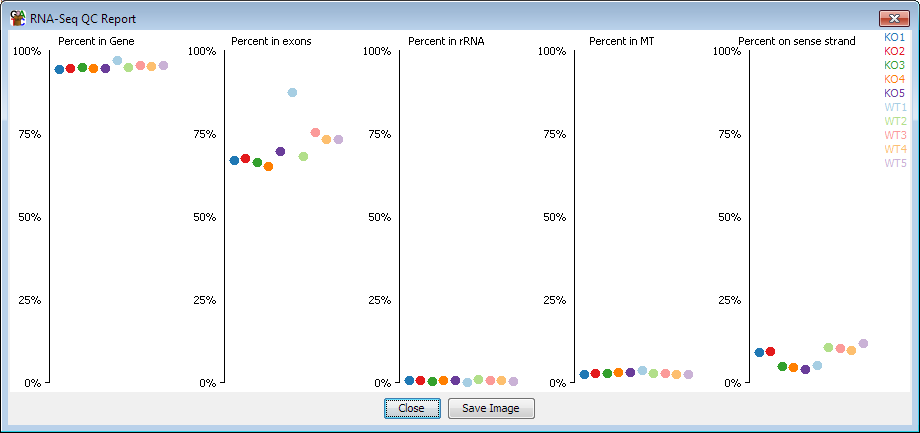

The RNA-Seq QC plot is intended to be an initial step in the analysis of RNA-Seq data. It does some simple checks on your data to determine if there are any obvious biases in the data, and whether any biases are consistent between your different replicates

The metrics which the plot calculates are:
Although there is information to be gained directly from each of these measures, often the most important thing to check is that they are similar for all of your replicates, since a difference would indicate some kind of systematic bias.
The options are simply a way to select which feature track represents the different types of feature used by the plot. The program will try to determine these automatically, but you can change them manually if needed